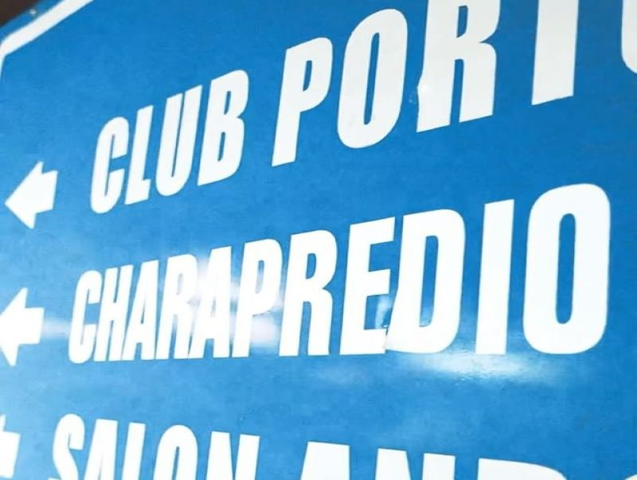

El 16 de abril de 2005 se realizo el primer partido y fue el año en el equipo comenzó a jugar en distingas ligas amateurs de zona sur de GBA ininterrumpidamente, presentándose a todos los partidos hasta el día de la fecha. Fue conformado principalmente por un grupo de amigos del 3er año de un colegio de Lomas de Zamora. Su nombre en primera instancia fue Carapala, después de un debate en el recreo entre hora y hora. Pasados cinco años cambiamos a una liga que nos exigió presentar un nombre de origen "vasco-germano" y por eso tomamos el disponible que figuraba en la lista: Caracotxe. Respetaba las primeras cuatro letras y fue una decisión bastante espontánea que tomaron dos de sus fundadores.
 • Fotos y videos de Instagram_files/escudo2.0.png)
Caracotxe FC
CharaPredio
